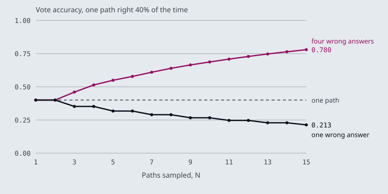

The notebooks use their own material: news headlines, product reviews, phone fact sheets and an NFL game summary. These pages carry each pattern over to the Larkspur Cloud handbook from M11 to M13, as the prompts a support assistant over that handbook would run: grading whether a chunk answers How long does a refund take?, computing the refund for Can I get a refund after 45 days?, and searching the handbook for Can I export my data after I cancel my plan?
TL;DR
- A few-shot prompt teaches the label set and the output format by example. Every example is sent on every call: the notebook’s three-example news classifier is 321 tokens, against 31 for the zero-shot version.
- Chain-of-thought asks for the steps before the answer. In few-shot CoT the model copies the exemplar’s reasoning, mistakes included; two of the notebook’s exemplars contain a wrong step.
- Self-consistency samples several reasoning paths and keeps the most common answer. It helps when wrong answers scatter and hurts when they agree: at one-path accuracy 0.40, a 15-path vote reaches 0.780 with four distinct wrong answers and falls to 0.213 on a yes/no question.
- ReAct interleaves Thought, Action and Observation until the model can answer. With tool calling, the Action is a structured call the framework runs; the Thought and Action lines in the system prompt are guidance, not a format anything parses.
- A prompt set is a test asset. Keep it fixed, change the model, and score the outputs against your own labels.
Mental model
- A customer asks “Can I get a refund after 45 days?”
- A template prompt with worked examples turns the question into a search query.
- The retriever returns handbook chunks. This is the one step with no prompt.
- A few-shot prompt labels each chunk yes or no: does it help answer the question?
- A support-agent persona and a reasoning cue answer from the chunks graded yes.
- The answer cites the chunks it used. Three of the four steps between question and answer were prompts.
Three of the four steps between the question and the answer are prompts, and each is assembled from the patterns in this module. When the pipeline gives a wrong answer, the fault sits in one of those prompts or in retrieval, and each can be tested on its own against a labelled set.
Few-shot
Lesson 5.1: Core prompt patterns. Notebooks: 01a_prompt_engineering_patterns.ipynb
An N-shot prompt puts N solved examples in front of the real input. Zero-shot gives only the instruction; one-shot adds one example; few-shot adds several. Notebook 01a runs all three on the same news classifier with gpt-4o-mini at temperature 0. Its prompts, counted with tiktoken in the o200k_base encoding that gpt-4o-mini uses:
| Prompt in 01a | Examples | Tokens sent |
|---|---|---|
| Zero-shot: four categories and one article | 0 | 31 |
| One-shot: one labelled headline, then the article | 1 | 55 |
| Few-shot: three labelled articles, then the article | 3 | 321 |
The examples teach three things the instruction leaves open:
- The label set and its spelling. The zero-shot prompt lists
sports, business, entertainment, technologyin lower case; the one-shot and few-shot prompts list them capitalised and show capitalised answers. Code that compares the reply against a fixed string depends on that detail. - The output shape. Each example ends
OUTPUT: SportsorCategory: Sports, so the model learns to reply with the bare label and stop. - Where the boundaries are. A phone launch is Technology; a company’s revenue mix is Business. Examples near a boundary teach more than examples in the middle of a class.
They also cost tokens on every call. The few-shot classifier sends ten times the tokens of the zero-shot one, for one label. In a RAG grader that runs once per retrieved chunk, that multiplies again by k. And examples can leave gaps: the notebook’s three cover Sports, Technology and Business, so Entertainment, the fourth label, has no example at all.
For Larkspur, a grading prompt decides whether a retrieved chunk answers the question. Both passages below are real chunks of the M11 handbook:
Does the passage answer the question? Reply with yes or no.
Question: Can I export my data after I cancel my plan?
Passage: After a plan is cancelled, its data is kept for 30 days and then permanently deleted. Export it before that window closes.
Answer: yes
Question: Can I export my data after I cancel my plan?
Passage: You can reboot a server from the console. A reboot takes about a minute and does not change the server IP address.
Answer: no
Question: {question}
Passage: {passage}
Answer:
The two examples teach the format, and they teach an easy boundary: the “no” passage shares no topic with the question. The hard cases are a passage on a nearby topic that does not answer (the billing chunk, on when plans are charged, for How long does a refund take?) and a passage that answers in other words (Refunds go back to the original payment method and take 5 to 10 business days to appear on your statement.). Add one example of each, keep yes and no balanced, and measure the grader against your own labels, which is the M05 lab brief: three grading prompts, 30 labelled pairs, agreement for each.
Five more patterns
Notebook 01a covers five more patterns, each a different way to constrain the reply:
- Persona.
Act as a marketing managerbefore a phone fact sheet sets the vocabulary, the audience and what counts as important. For Larkspur, “Act as a Larkspur support agent who answers only from the handbook” sets both the tone and the boundary. - Flipped interaction. The model asks the questions:
Ask me one question at a timeuntil it has enough to write a data science project plan. It needs memory, so the notebook wraps the chain inRunnableWithMessageHistory, oneChatMessageHistorypersession_id. For Larkspur, a server-sizing assistant can ask about peak memory use before it recommends a plan. - Directional stimulus. A hint steers the output without writing it:
Summarize the following article in 5 lines based on the following hints. Hint: Generative AI history, data modalities, tools, applications, concerns. The hint list doubles as a checklist for grading the summary. - Template. The prompt fixes the output fields:
ACTIVITY, TOPIC, RESOURCE, DIFFICULTY SCALE 1-5, NOTES, returned as JSON. Downstream code can parse the reply only if the model keeps the template, so validate it before use. - Meta language. The prompt defines a notation and then uses it:
Business_Understanding,3 -> Data_Understanding,5 -> …means a step and its days, and the model expands each step into a day-by-day plan. A notation keeps a long instruction short, as long as the prompt explains it once.
The flipped interaction is the only pattern here with state. Each turn sends the whole history back to the model:
sequenceDiagram
participant U as User
participant C as conv_chain
participant M as gpt-4o-mini
U->>C: Ask me questions, one at a time
C->>M: history + new input
M-->>U: First question
U->>C: Answer
C->>M: history + answer
M-->>U: Next question
Note over C: history grows every turn, stored per session_id
That history is also why the cost of a flipped interaction grows with every turn. The notebook stores the conversation in store["unused"], the history for the session id it passes, so that is where to read the messages back.
Key Takeaways
- Few-shot examples teach the label set, the output shape and the class boundaries. They are paid for on every call, so the classifier’s three examples cost ten times the zero-shot tokens.
- Choose examples near the boundary, keep the labels balanced, cover every label, and measure the prompt against your own labelled pairs.
- Persona, flipped interaction, directional stimulus, template and meta language each constrain the reply in a different way. Validate templated output before code uses it, and expect a stateful conversation to cost more each turn.
Check yourself
1. What do the few-shot examples teach the news classifier that its instruction leaves open, and what do they cost?
They teach the label set and its spelling, the output shape (the bare label, then stop) and where the boundaries between classes are. They cost tokens on every call: the few-shot prompt sends 321 tokens against the zero-shot prompt’s 31. In a RAG grader that runs once per retrieved chunk, that cost multiplies again by k.
2. The Larkspur grading prompt has one yes example and one no example on an unrelated topic. Which two examples should you add?
A nearby passage that does not answer, labelled no: the billing chunk for How long does a refund take?. And a passage that answers in other words, labelled yes: the one saying refunds take 5 to 10 business days to appear on your statement. The current no example shares no topic with the question, so it only teaches an easy boundary; keep yes and no balanced and measure the grader against your own labels.
3. A flipped-interaction assistant gets more expensive with every question it asks. Why?
It is the only one of these patterns with state. Each turn sends the whole conversation history back to the model, stored per session_id by RunnableWithMessageHistory, so the prompt grows with every turn and so does the cost.
Chain-of-thought
Lesson 5.2: Reasoning prompts: chain-of-thought, self-consistency, least-to-most, ReAct. Notebooks: 02a_advanced_prompt_engineering_patterns.ipynb
A chain-of-thought (CoT) prompt asks the model to write its reasoning before the answer. The answer is then conditioned on the steps, and the steps are on the page for you to check. Notebook 02a uses one question for every variant: from a game summary, How many yards was the shortest valid field goal? The summary has a 35-yard field goal and a 31-yard one that was blocked, so the right answer is 35, and a model that skips the word “blocked” says 31.
Three ways to ask for the reasoning:
- Zero-shot CoT adds one instruction:
Think step-by-step to get to your answer. Show your step-by-step reasoning and then the answer. - Few-shot CoT shows worked examples with numbered steps (
Step 1: Roger started with 5 balls.) and lets the model copy the shape. - Least-to-most asks the model to list the subproblems first, then solve them in order:
break down the problem first into sub problems, answer each sub problem sequentially.
In few-shot CoT the model copies the reasoning of the examples as well as their format, so the examples have to be right. Two in notebook 02a are not:
- The keystroke example ends
9 + 90 + 401 = 1392 keystrokes. Those three numbers add up to 500, the count of numbers from 1 to 500. The keystrokes are 9 × 1 + 90 × 2 + 401 × 3 = 1,392: the answer is right and the step that reaches it is wrong. - The least-to-most example lists 28-yard, 57-yard and 59-yard which are all valid goals, but its own text says the 28-yard attempt was blocked. The final answer, 59, survives only because the blocked kick was not the longest.
The second example teaches the exact mistake the test question checks for: counting a blocked kick as valid.
Least-to-most fits Larkspur questions that combine rules. Can I get a refund after 45 days? breaks into three subproblems:
- Is day 45 inside the 30-day window for a full refund? No.
- Which rule applies after day 30? The refund is prorated to the unused whole months, minus a 15% early-termination fee.
- How many whole months are unused? That depends on the customer’s plan start date, which is in the billing system, not in the handbook.
The third subproblem cannot be solved by reasoning alone. It needs a lookup, which is where ReAct comes in.
Self-consistency
Self-consistency samples several chain-of-thought paths for the same question and keeps the answer most of them reach (Wang et al., 2022). Notebook 02a builds it from three CoT chains run in parallel with RunnableParallel, all gpt-4o-mini at temperatures 0, 0.5 and 0.9, and a fourth call at temperature 0 that reads the three paths and is told to aggregate, take the majority vote as needed:
flowchart LR
P[/Problem/] --> C1["Path 1<br/>temperature 0"]
P --> C2["Path 2<br/>temperature 0.5"]
P --> C3["Path 3<br/>temperature 0.9"]
C1 --> AG["Aggregator call<br/>majority vote"]
C2 --> AG
C3 --> AG
AG --> A[/Answer/]
That is four calls where plain CoT makes one. Whether the extra calls pay depends on how the wrong answers are spread, which the interactive lab computes exactly. It treats each path as an independent draw that is right with probability p and otherwise gives one of W equally likely wrong answers, then counts how often the most common answer is the right one, with ties split at random:
| One path right | Wrong answers | N = 1 | N = 3 | N = 5 | N = 15 |
|---|---|---|---|---|---|
| 0.60 | 1 (yes/no) | 0.600 | 0.648 | 0.683 | 0.787 |
| 0.40 | 1 (yes/no) | 0.400 | 0.352 | 0.317 | 0.213 |
| 0.40 | 4 | 0.400 | 0.460 | 0.549 | 0.780 |
| 0.60 | 4 | 0.600 | 0.720 | 0.835 | 0.987 |

Three rules follow:
- A vote amplifies whatever answer is most common. If one path is right more often than any single wrong answer, more paths help. If not, they make the wrong answer look certain: a yes/no grader that is right 40% of the time drops to 0.213 with 15 votes.
- Scattered errors are where voting pays. With four distinct wrong answers, a path that is right only 40% of the time still wins the vote 78% of the time at N = 15, because no single wrong answer gathers enough votes. Numeric answers such as a prorated refund behave like this; yes/no grades never do.
- On two labels, use an odd N. An even N can split evenly, and a split is a coin flip, so N = 4 scores exactly what N = 3 scores (0.648 at
p= 0.60) for one more call.
The lab’s independence assumption is the best case. Paths from one model share its blind spots, so they agree on the same wrong answer more often than independent draws would, and a real vote gains less. A path at temperature 0, as in the notebook, repeats the model’s most likely path rather than sampling a new one. For a measured case where the wrong answers clustered on one value, see M26’s self-consistency page.
ReAct format
ReAct prompts the model to alternate reasoning with actions: a Thought, an Action with its input, the Observation the action returns, and another Thought, until it can write a Final Answer (Yao et al., 2022). Notebook 02a puts that format in its system prompt:
Thought: you should always think about what to do
Action: the action to take … call the tool [search_web]
Action Input: the input to the action
Observation: the result of the action
… (this Thought/Action/Action Input/Observation can repeat N times)
Thought: I now know the final answer
Final Answer: the final answer to the original input question
- A customer asks “Can I export my data after I cancel my plan?”
- The model reasons that the handbook holds the answer and that it should search it.
- It names a tool and its input. With tool calling this is a structured call, not a line of text to parse.
- The tool runs and returns the export and retention chunks: exports from Settings, data kept 30 days after cancelling.
- The next Thought reads the Observation and decides the evidence is enough.
- The Final Answer: yes, export from Settings, then Data, within 30 days of cancelling.
The notebook’s tool, search_web, takes the top five DuckDuckGo results, fetches each page with requests and returns its text through BeautifulSoup. The agent is gpt-4o built with create_tool_calling_agent and run by AgentExecutor. That combination changes what the format means:
- The Action is a tool call, not text.
bind_toolsgives the model the tool’s schema, and the model returns a structuredtool_callsentry with the tool name and arguments. The agent runs it and feeds the result back as a tool message. Nothing parses anAction:line: a reply with notool_callsis taken as the final answer, even if its text saysAction:. ThePAUSEin the prompt has no effect. - The Thought lines are guidance. They ask the model to plan and to check the Observation before answering. The model may write them, or may call the tool straight away.
- The loop needs a stop.
AgentExecutorends the run when the model replies without a tool call, or aftermax_iterations(15 by default).
The notebook first asks Tell me about LangGraph in detail including who made it and key features with no tool, and its own comment expects the model to decline or make up an answer; the agent then answers the same question from the pages search_web fetched. For Larkspur the tool is a handbook search, and Can I export my data after I cancel my plan? takes one round: the search returns the export and retention chunks, and the answer is to export from Settings, then Data, within 30 days of cancelling. The proration question from the section above takes two tools, the handbook and the customer’s billing record. M23 and M24 build this loop in LangGraph.
Key Takeaways
- Chain-of-thought puts the reasoning on the page before the answer. In few-shot form the model copies the examples’ reasoning, so check every step of every example, not only the final answers.
- Self-consistency votes over several paths and amplifies the most common answer. It pays when errors scatter, as numeric answers do, and makes a weak yes/no grader worse.
- In a tool-calling agent the action is a structured tool call, and a reply with none ends the run. Use ReAct when a subproblem needs a lookup that reasoning alone cannot supply.
Check yourself
1. Why does the least-to-most example in notebook 02a make the field goal test harder to pass?
In few-shot chain-of-thought the model copies the reasoning of the examples, not only their format. That example lists a 28-yard kick as valid although its own text says it was blocked; its answer survives only because that kick was not the longest. It teaches the exact mistake the test checks for: counting the blocked 31-yard kick and answering 31 instead of 35.
2. A yes/no grader path is right 40% of the time. What does a 15-path majority vote score, and how would four distinct wrong answers change that?
0.213, worse than a single path’s 0.400: the one wrong answer is more common than the right one, and the vote amplifies it. With four equally likely wrong answers the same 40% path wins the vote 78% of the time (0.780), because no single wrong answer gathers enough votes. These figures assume independent paths, the best case; paths from one model share blind spots and gain less.
3. A ReAct agent built with create_tool_calling_agent replies with text that says Action: search_web, but no search runs. Why?
The action is a structured tool_calls entry, not text, and nothing parses an Action: line. AgentExecutor takes a reply with no tool_calls as the final answer, even if its text says Action:, and ends the run there.
One prompt set across four APIs
Lesson 5.3: The same tasks across models. Notebooks: 03a_openai_gpt_4o_mini.ipynb, 03b_google_gemini_1_5_flash.ipynb (optional), 03c_meta_llama_3_2_90b_groq.ipynb (optional), 03d_meta_llama_3_2_1b_huggingface.ipynb (optional)
The four notebooks run the same ten tasks: zero-shot and few-shot classification, Python and SQL generation, information extraction from a clinical note, closed-domain and open-domain question answering, summarisation, turning a fact sheet into an FAQ, and translation. Each notebook defines one function, get_completion(prompt, model), and every task calls it. Only that function changes between notebooks:
| Notebook | Model | Client the notebook installs |
|---|---|---|
| 03a | gpt-4o-mini |
openai==1.55.3, Chat Completions |
| 03b | gemini-1.5-flash |
google-generativeai==0.8.3, generate_content |
| 03c | llama-3.2-90b-vision-preview |
groq==0.13.0, Chat Completions |
| 03d | meta-llama/Llama-3.2-1B-Instruct |
huggingface_hub InferenceClient |
All four set temperature 0, and 03d caps replies at max_tokens=2048. The prompt text is identical in 03a, 03c and 03d. 03b adds one prompt, a second LangGraph question ending If you are not able to find the answer in your trained knowledge just say you don’t know, so for that task its run answers a different prompt.
flowchart LR
PS["Prompt set<br/>fixed text"] --> GC["get_completion<br/>one per provider"]
GC --> M["Model<br/>temperature 0"]
M --> OUT["Outputs<br/>per task"]
OUT --> SC["Score against<br/>your labels"]
The design keeps the prompt set as the fixed part and the wrapper as the swap point. Three practices make the comparison worth trusting:
- Score, do not eyeball. The notebooks print each reply. A comparison needs a check per task: exact match for the sentiment label, a line count for “limit the summary to 5 lines”, valid JSON for a template, a labelled list of symptoms for the clinical note. That is the M05 lab brief on a small scale.
- Keep the model id in one place. Provider ids are retired. Groq shut down
llama-3.2-90b-vision-previewon 14 April 2025 and namesmeta-llama/llama-4-scout-17b-16e-instructas the replacement (Groq deprecations), so 03c and the Llama half of notebook 04a fail until the id is changed. The 1B model in 03d is gated: the notebook asks you to request access from Meta on Hugging Face first. - Read the prompt as each model will. Task 6, closed-domain QA, gives a survey report as context and asks the model to answer to the best of your ability. That wording invites the model’s own knowledge. In a RAG pipeline the same prompt needs an instruction to answer only from the context and to say so when the context does not contain the answer, the line 03b adds to its extra prompt.
For Larkspur, the closed-domain prompt becomes the answer step of the pipeline:
Answer the customer's question using only the handbook passages below.
If the passages do not contain the answer, reply "The handbook does not cover this."
Passages:
"""{passages}"""
Question: {question}
Answer:
Run it on each candidate model with the same golden questions and passages, and score each answer for whether it is supported by the passages. A model that answers What happens if my server goes down? from general knowledge when the passages hold only the reboot instructions fails this prompt, however fluent the answer is.
Key Takeaways
- Keep the prompt set fixed and swap models behind one wrapper, so the model id lives in one place and a retired id is a one-line fix.
- Score each task with its own check, such as exact match, line count or valid JSON, instead of reading replies by eye.
- For a RAG answer step, tell the model to answer only from the passages and to say when they do not cover the question. Score answers for support by the passages, not fluency.
Check yourself
1. Why is printing each model's reply not enough to compare the four models on the ten tasks?
Reading replies by eye gives an impression, not a comparison. Each task needs its own check: exact match for the sentiment label, a line count for the five-line summary, valid JSON for a template, a labelled list of symptoms for the clinical note. Scoring against your own labels is the M05 lab brief on a small scale.
2. The Larkspur answer prompt gets only the reboot passages for What happens if my server goes down? A model answers fluently from general knowledge. Does it pass?
No. The prompt tells the model to answer only from the handbook passages and to reply “The handbook does not cover this.” when they do not contain the answer. Each answer is scored for whether the passages support it, however fluent it is.
3. Notebook 03c now fails on its first call although nobody changed its code. What is the likely cause, and what practice keeps the fix small?
The model id was retired: Groq shut down llama-3.2-90b-vision-preview on 14 April 2025 and names meta-llama/llama-4-scout-17b-16e-instruct as the replacement. Keep the model id in one place, inside the get_completion wrapper, so the fix is a one-line change.
From a pattern to a production prompt
Lesson 5.4: Applied prompting on business tasks. Notebooks: 04a_gpt_4o_and_llama_3_2_real_world_tasks.ipynb
Notebook 04a sends each of five business tasks to gpt-4o and to Llama 3.2 90B on Groq, both at temperature 0. The prompts combine the patterns from lessons 5.1 and 5.2, and each task adds one technique that a production prompt needs:
- Several instructions, one pass. The review prompt asks for a summary of at most 3 lines, the positives and negatives, the overall sentiment, 3 to 5 emotions, and a reply email. The email instruction is conditional: thank the customer if the sentiment is positive or neutral, apologise if it is negative. One call returns every field, and they agree with each other because the model wrote them together.
- Delimiters around the input. Every task wraps its input in triple backticks (or triple quotes for the IT tickets), so the model can tell the instruction from the text it works on. Delimiters make an instruction hidden in a review easier to ignore; they do not guarantee it.
- One source, several audiences. The same paper abstract becomes a 10-line summary, an executive summary for a healthcare company with ethics pros and cons, and one for a generative AI company organised by text, image and structured data. Only the persona and the audience line change.
- Refinement in steps. The phone advert goes through three versions: a plain product description, then a fixed layout (product name, description, a two-column
FeatureandSpecificationtable with exact numbers), then a version of at most 60 words on display and camera. The second step fixes the structure, the third the length and focus. - An output contract. The IT support prompt asks for JSON with six fields:
orig_msg,orig_lang,category,trans_msg,responseandtrans_response. The six tickets are in Portuguese, Italian, Japanese, Russian (two) and Turkish, so one prompt detects the language, classifies, translates and replies in the customer’s language. - Synthetic examples. The last task asks for five positive and five negative movie-review tweets of at most 250 characters, then three positive and three negative laptop reviews of at most 200 words with a sentiment and up to three key topics. Generated examples like these can seed a few-shot prompt or a test set, once a person has checked their labels.
Two details in the notebook are worth copying the other way round. The JSON contract lists its fields as orig_msg: The original customer message inside braces, which describes JSON without being JSON, and the notebook displays the reply as Markdown without parsing it. And get_completion returns the string LLM not configured! for an unknown model name, so a typo produces a plausible-looking reply instead of an error. A production version parses and validates every reply, and fails loudly:
flowchart LR
T[/Ticket/] --> P["Prompt<br/>contract + delimiters"]
P --> M[Model]
M --> V{"Valid JSON<br/>with all fields?"}
V -- yes --> R[/Reply sent/]
V -- no --> RT["Retry once<br/>with the error"]
RT --> M
If the retry also fails, the ticket goes to a person, not to the customer. For Larkspur, the same contract triages support tickets: orig_lang, a category from a fixed list (billing, refunds, exports, outages, server sizing), an English translation for the support team, and a draft reply in the customer’s language that the answer step fills from the handbook. Fix the category list in the prompt, as the few-shot classifier in lesson 5.1 fixes its labels, so the reply can be routed by code.
Key Takeaways
- One prompt can carry several instructions, including conditional ones, and return fields that agree because the model wrote them together. Wrap the input in delimiters to separate it from the instructions.
- Refine a prompt in steps: fix the structure first, then the length and focus. Change only the persona and audience line to reuse one source for several readers.
- Give structured output a contract with a fixed category list, parse and validate every reply, retry once with the error, and send a second failure to a person.
Check yourself
1. Why do the notebook's prompts wrap each input in triple backticks, and what does that not guarantee?
Delimiters let the model tell the instruction from the text it works on, such as a review or an IT ticket. That makes an instruction hidden inside the input easier to ignore, but it does not guarantee the model ignores it.
2. You adapt the IT support JSON contract to triage Larkspur tickets. What fields does it need, and what makes the reply routable by code?
orig_lang, a category, an English translation for the support team, and a draft reply in the customer’s language that the answer step fills from the handbook. The category must come from a fixed list in the prompt (billing, refunds, exports, outages, server sizing), as the few-shot classifier fixes its labels, so code can route on it.
3. A ticket's reply comes back as something that is not valid JSON with all six fields. What should the production pipeline do?
Parse and validate every reply, then retry once with the error. If the retry also fails, the ticket goes to a person, not to the customer. The notebook only displays the reply as Markdown, so a broken reply would pass unnoticed.
Interactive lab
Self-consistency: when a vote helps: open the file in a browser. Set one wrong answer (a yes/no grade) and a one-path accuracy of 0.60, then slide N from 1 to 15 and watch the vote creep from 0.600 to 0.787 while the calls climb to 16. Drop the accuracy to 0.40 and the same vote falls to 0.213. Then pick four wrong answers at 0.40 and the vote rises instead, to 0.780 at N = 15.
How it connects
- Before: M02 calls the provider APIs these prompts are sent through; M04 covers fine-tuning, the alternative when a prompt cannot carry enough examples.
- Next: M06 applies the patterns to image inputs, and M07 turns them into LangChain prompt templates and output parsers. The rewrite prompt returns in M18, the grading prompt in M28, the ReAct loop in M23 and M24, and self-consistency with tree of thoughts in M26.
Interview Spotlight: 5 Questions You Might Get Asked
Production questions of the kind asked in applied AI engineering interviews.
1. Larkspur’s relevance grader labels the refund-timing chunk “no” for “How long does a refund take?”, so the assistant answers “I don’t know”. The grader is a few-shot prompt. How do you debug it?
What a strong answer covers:
- Reproduces the call with the exact rendered prompt, model and temperature, and reads what the grader saw
- Checks the examples first: do they cover a chunk that answers the question with different words (“Refunds” against “refund”)? Are the yes and no examples balanced?
- Adds the case to a labelled grading set and measures agreement before and after the fix, so the change is not tuned to one question
- Considers a stricter output contract (one word, or a schema) so a hedged answer is not parsed as “no”
2. The team wants self-consistency on the grader: five samples and a vote on every chunk. What do you say?
What a strong answer covers:
- A yes/no grade has one wrong answer, so a vote amplifies the majority: it helps only when one sample is already right more than half the time
- Measures one-sample accuracy on labelled pairs before deciding; below 0.5 the vote makes the grader worse (0.40 becomes 0.317 at five samples in the lab)
- Counts the cost: five calls per chunk times
kchunks per question, plus an aggregator call if an LLM merges the paths as in notebook 02a - Prefers an odd number of samples, since an even split on two labels is a coin flip and adds a call for nothing
3. You are moving the support assistant from gpt-4o-mini to a cheaper open model. How do you decide whether the prompts still work?
What a strong answer covers:
- Freezes the prompt set and the labelled cases, and runs both models at temperature 0 through the same wrapper
- Scores each task with a metric that fits it: exact match for labels and JSON validity for extraction, an LLM or human judge for free text
- Compares per task, not on average: a model can match on classification and still fail the JSON format or the five-line limit
- Pins the model id in one config value, because provider ids are retired (Groq shut down the
llama-3.2-90b-vision-previewid used in two M05 notebooks on 14 April 2025)
4. The ReAct support agent sometimes loops: it searches the handbook, gets the same chunks, and searches again. How do you find and stop this?
What a strong answer covers:
- Logs every Thought, tool call and Observation per run, and counts tool calls per question
- Sets a hard limit on iterations (
max_iterationsonAgentExecutor, a recursion limit in LangGraph) and a fallback answer when it is hit - Checks whether the Observation can answer the question at all: repeated identical searches usually mean the evidence is not in the handbook, which should end in an “I don’t know”
- Tracks the share of runs that hit the limit as a metric, alongside answer quality on the golden set
5. A product manager asks for one prompt that summarises a ticket, classifies it, detects the language and drafts a reply in that language. When is one prompt right, and when do you split it?
What a strong answer covers:
- One prompt with an output contract (named JSON fields, as in notebook 04a’s IT support task) is cheaper and keeps the parts consistent with each other
- Splits it when a part needs its own model, its own evaluation or a human check, or when one field’s failure should not discard the others
- Validates the output against a schema and retries or repairs on a parse failure, instead of trusting free-form JSON
- Labels a sample of tickets per field, so a regression in classification is visible even when the reply text still looks fine
Key Takeaways
- Write each LLM step as a pattern you can name: examples, a reasoning cue, a template, a persona. A named pattern is easier to test and to change.
- Examples are part of the prompt’s cost and its correctness. Check that they cover every label and that every worked step in them is right.
- Vote only on short answers that can be compared, and only when one sample is right more often than any single wrong answer.
- Freeze a labelled prompt set before you change the model, the prompt or the sampling, and judge every change against it.